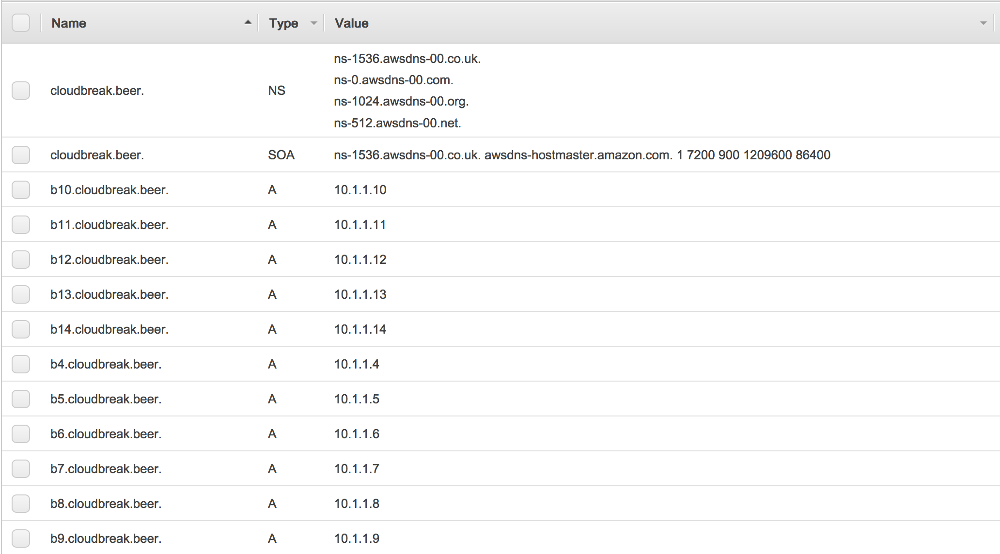
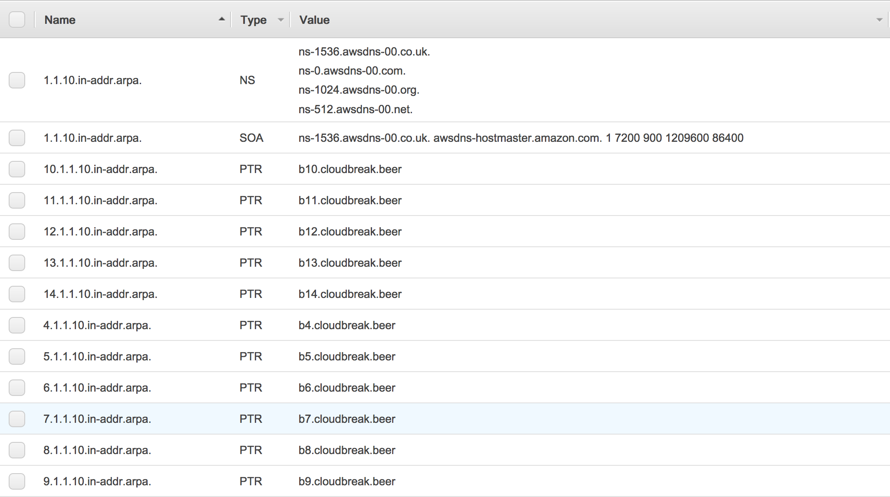

Using custom hostnames based on DNS
By default, when Cloudbreak provisions cloud provider resources, your cloud provider assigns hostnames for your cluster nodes. Optionally, instead of using default hostnames, you can configure Cloudbreak to use custom hostnames based on DNS. To do that, follow the steps for configuring reverse Domain Name System (DNS) described below.
When the cluster node machines are provisioned, they try to make a reverse DNS lookup (by querying of the DNS to determine the domain name associated with a specific IP address); if the reverse DNS lookup returns a valid value, then that value is set as hostname. This is why reverse DNS setup is required for using custom hostnames.
Configure DNS on AWS
On AWS you have the following two options:
- Use Route53 as DNS provider.
- Set up your own DNS server in your VPC
Both options require you to have an existing VPC and attach a custom DHCP option to it.
The instructions provided in this section describe how to perform the steps in Amazon web consoles, but the steps can also be performed (and automated) in the AWS CLI.
Configure DNS using Route53
Follow these general steps to configure reverse DNS using Route53.
Steps
-
Create a new VPC or use your existing VPC:
- You can create a new VPC from the Amazon VCP console (for example by using Start VPC Wizard):
- CIDR block example: 10.1.0.0/16
- Subnet's CIDR example: 10.1.1.0/28
- Make sure to:
- Enable DNS resolution for the VPC. You can do this by selecting the VPC, selecting Actions > Edit DNS resolution and choosing Yes.
- Enable DNS hostnames for the VPC. You can do this by selecting the VPC, selecting Actions > Edit DNS hostnames and choosing Yes.
Optionally, you may want to set up an Internet Gateway for the VPC and add a default route to the routing table for the Internet Gateway. Additionally, you may want to enable the Auto-assign Public IP option. This way Cloudbreak would reach the cluster from outside of the VPC and the cluster would have internet access.
- You can create a new VPC from the Amazon VCP console (for example by using Start VPC Wizard):
-
Create a DHCP options set:
Perform this step from the Amazon VPC console. Select DHCP Options Sets from the left pane and click on Create a DHCP options set. Make sure to:
- Set the Domain name to a preferred domain, for example
cloudbreak.beer -
Set the Domain name servers to
AmazonProvidedDNS
For detailed steps, refer to AWS documentation.
- Set the Domain name to a preferred domain, for example
-
Assign the newly created DHCP options set to your VPC:
- From the Amazon VPC console, select Your VPCs from the left pane.
- Select the VPC created earlier.
- Click on Actions > Edit DHCP Options Set.
- Select the newly created DHCP option set.
-
Configure your domain at Route53:
Perform these steps from the Amazon Route53 console.
For general steps, refer to AWS documentation.- Select Hosted zones from the left pane.
-
Create a hosted zone by clicking on Create Hosted Zone. Make sure to:
- Use the same domain name as used previously with the DHCP options set (In the example this was
cloudbreak.beer). - Set the Type to Private Hosted Zone for Amazon VPC.
- Select the VPC ID of the VPC to which you previously assigned the DHCP option.
- Use the same domain name as used previously with the DHCP options set (In the example this was
-
Add records for your hosted zone:
- Select the hosted zone and choose Go to Record Sets
-
Click Create Record Set to create a record set. You must perform this step for every available IP, so that each IP can have a custom name (If you used the subnet example listed above, these IPs will be in the range of 10.1.1.4-14):
- Type: select A
- Name: for example b10
- Value: for example 10.1.1.10
-
After performing this step for each IP, you should end up with an many records as IPs. For example:

-
Create another hosted zone for reverse DNS lookup.
Perform these steps from the Amazon Route53 console.
- Select Hosted zones from the left pane.
-
Create a hosted zone by clicking on Create Hosted Zone. Make sure to:
-
For example, if you used the subnet example listed above, its
Domain nameshould look like this (as reverse DNS lookups use the special domain in-addr.arpa):1.1.10.in-addr.arpa.
-
Set the Type to Private Hosted Zone for Amazon VPC.
- Select the VPC ID to which you previously assigned the DHCP option set.
-
-
Add records for every created domain:
- Type: select PTR
- Name: This determines the first part of the IP, for example 10
-
Value: Enter the domain name that you set in the previous step, for example, b10
-
After performing this step for each domain, you should end up with as many records as IPs. For example:

-
Create the cluster in the VPC configured in the earlier steps and you will have the same hostnames set as the domain names.
Since you don't have control the order over the IP addresses leased to the machines, the names may not be in order.
Configure DNS using custom DNS server
Follow these general steps to configure reverse DNS using a custom DNS server.
Steps
-
Create a new VPC or use your existing VPC:
- You can create a new VPC from the Amazon VCP console (for example by using Start VPC Wizard):
- CIDR block example: 10.1.0.0/16
- Subnet's CIDR example: 10.1.1.0/28
- Make sure to:
- Enable DNS resolution for the VPC. You can do this by selecting the VPC, selecting Actions > Edit DNS resolution and choosing Yes.
- Enable DNS hostnames for the VPC. You can do this by selecting the VPC, selecting Actions > Edit DNS hostnames and choosing Yes.
Optionally, you may want to set up an Internet Gateway for the VPC and add a default route to the routing table for the Internet Gateway. Additionally, you may want to enable the Auto-assign Public IP option. This way Cloudbreak would reach the cluster from outside of the VPC and the cluster would have internet access.
- You can create a new VPC from the Amazon VCP console (for example by using Start VPC Wizard):
-
Set up DNS server in your VPC/subnet:
- In the configuration ensure that you have DNS records and reverse DNS pointers for all IP address (for example 10.3.3.4-14)
-
Example unbound configuration:
[root@ip-10-3-3-9 conf.d]# cat 00-cloudbreak.cloud.conf server: local-zone: "cloudbreak.cloud." static local-data: "aww1.cloudbreak.cloud. IN A 10.3.3.4" local-data-ptr: "10.3.3.4 aww1.cloudbreak.cloud." local-data: "aww2.cloudbreak.cloud. IN A 10.3.3.5" local-data-ptr: "10.3.3.5 aww2.cloudbreak.cloud." local-data: "aww3.cloudbreak.cloud. IN A 10.3.3.6" local-data-ptr: "10.3.3.6 aww3.cloudbreak.cloud." local-data: "aww4.cloudbreak.cloud. IN A 10.3.3.7" local-data-ptr: "10.3.3.7 aww4.cloudbreak.cloud." local-data: "aww5.cloudbreak.cloud. IN A 10.3.3.8" local-data-ptr: "10.3.3.8 aww5.cloudbreak.cloud." local-data: "aww6.cloudbreak.cloud. IN A 10.3.3.9" local-data-ptr: "10.3.3.9 aww6.cloudbreak.cloud." local-data: "aww7.cloudbreak.cloud. IN A 10.3.3.10" local-data-ptr: "10.3.3.10 aww7.cloudbreak.cloud." local-data: "aww8.cloudbreak.cloud. IN A 10.3.3.11" local-data-ptr: "10.3.3.11 aww8.cloudbreak.cloud." local-data: "aww9.cloudbreak.cloud. IN A 10.3.3.12" local-data-ptr: "10.3.3.12 aww9.cloudbreak.cloud." local-data: "aww10.cloudbreak.cloud. IN A 10.3.3.13" local-data-ptr: "10.3.3.13 aww10.cloudbreak.cloud." local-data: "aww11.cloudbreak.cloud. IN A 10.3.3.14" local-data-ptr: "10.3.3.14 aww11.cloudbreak.cloud."
-
Create a DHCP options set:
Perform this step from the Amazon VPC console. Select DHCP Options Sets from the left pane and click on Create a DHCP options set. Make sure to:
- Set the Domain name to your preferred domain, for example
cloudbreak.cloud - Set Domain name servers to the previously created DNS server
-
Optionally, set a Name tag
For detailed steps, refer to AWS documentation.
- Set the Domain name to your preferred domain, for example
-
Assign the newly created DHCP options set to your VPC:
- From the Amazon VPC console, select Your VPCs from the left pane.
- Select the VPC created earlier.
- Click on Actions > Edit DHCP Options Set.
- Select the newly created DHCP option set.
-
Create the cluster in the VPC configured in the preceding steps and you will have the same hostnames set as the domain names.
Since you don't have control the order over the IP addresses leased to the machines, the names may not be in order.